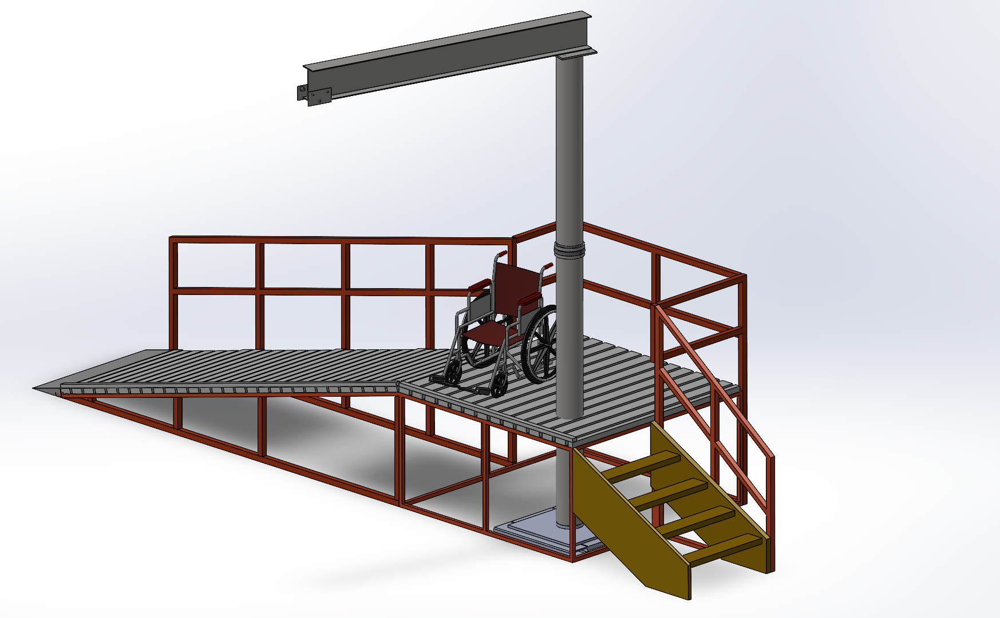
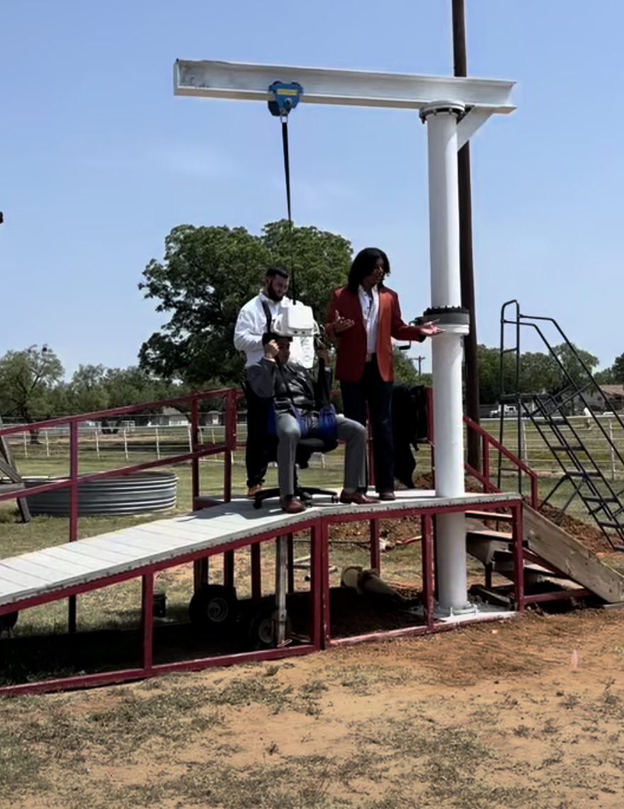
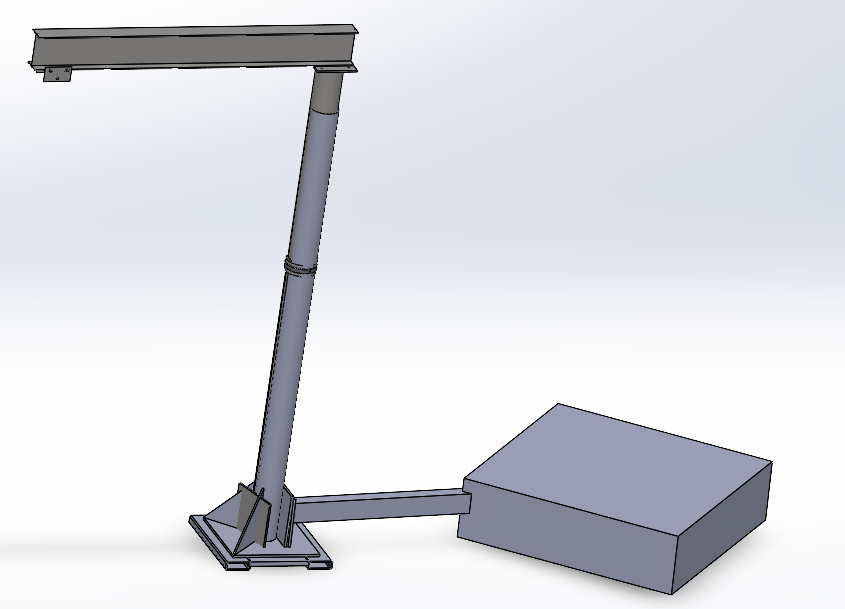
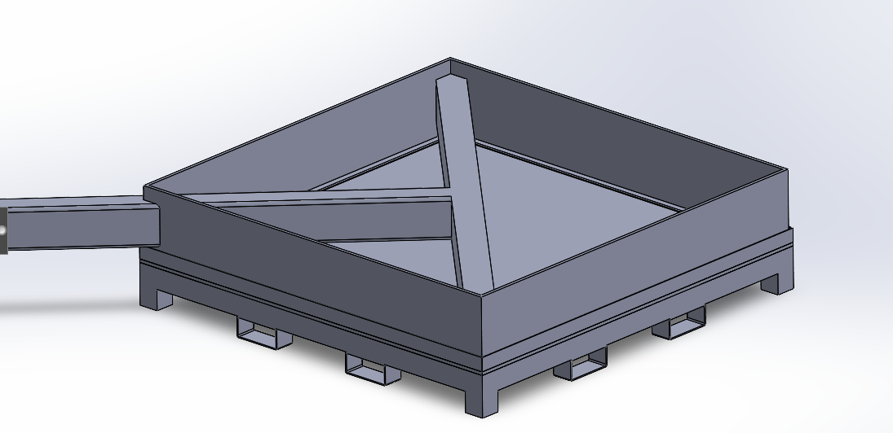
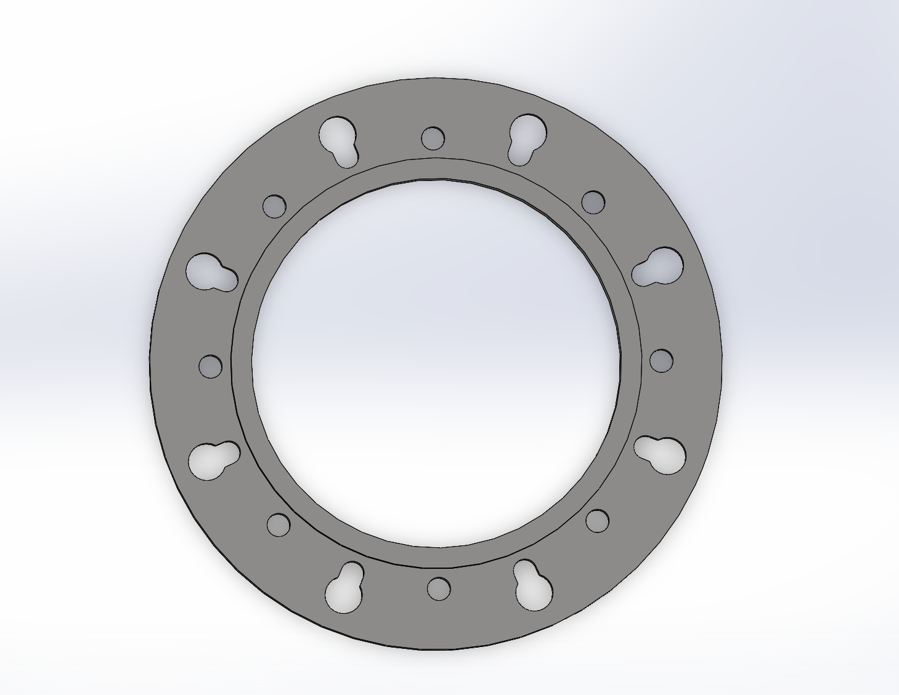
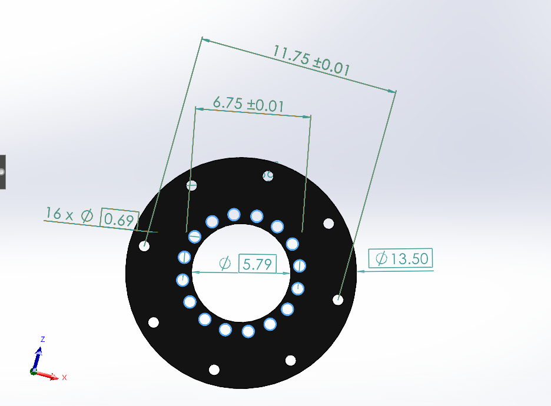
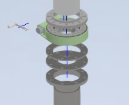
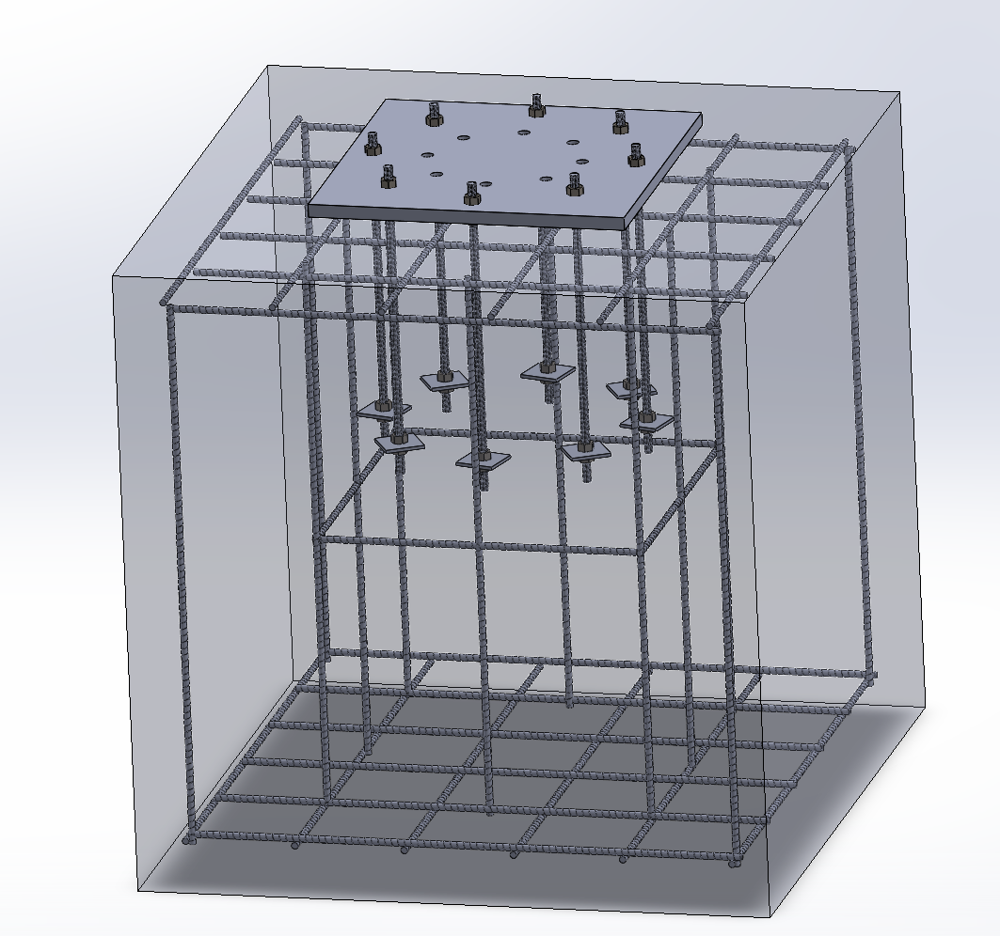

01 / HSU SENIOR CAPSTONE · 2025–2026
Hippotherapy
patient lift.
An outdoor lifting system designed to assist transfers between a mounting ramp and a horse for Hardin-Simmons University’s hippotherapy program.
DESIGN AND BUILD
From CAD to the installed lift
The CAD model placed the lift in the existing ramp environment. The installed photo shows how that layout came together at the site.




SEE THE SYSTEM
Lift demonstration
A walkthrough of the lift and its operating sequence.
THE PURPOSE
What we built
The team developed a fixed-base jib system for an outdoor equestrian facility. Its structure connects a reinforced concrete foundation and steel mast to a rotating beam, traveling trolley, and removable patient hoist.
MY CONTRIBUTION
What I worked on
- CNC machining and interfaces
I machined the adapter flange and modified the existing flanges for the slewing-drive assembly on the university’s HAAS CNC mill.
- Foundation and anchoring
I designed the reinforcement and anchor-bolt layout, and calculated the footing size needed to resist tipping and wind loads.
- Materials and coordination
I researched materials and components while keeping the budget in mind. I also proposed using a slew ring, arranged the concrete delivery, and helped keep the team moving toward our deadline.
- Technical documentation
I put together the final report, documented the slewing-drive design, and coordinated fabrication information and communication with IMO USA.
EARLIER DESIGN · NOT BUILT
The counterweight base we decided against
Before settling on the concrete foundation, we developed a freestanding version of the lift. A steel frame and ballast would resist the beam’s tipping moment without permanent anchors. It kept the single-column layout and offered a way to relocate the system without building a new footing.




Why we considered it
The tray gave the ballast a defined place in the structure, with internal bracing and forklift-style pockets for handling. The concept avoided excavation and concrete work while keeping the lift separate from the existing ramp. We could study the overall arrangement in CAD before committing to fabrication.
Why we changed direction
As the patient-load requirement increased from 300 to 400 lb, the team revisited the overturning demand and the design basis for lifting people. Resisting that demand through counterweight alone required a substantial amount of ballast and a larger base footprint.
At the time, we estimated that the steel needed for the counterweight design would exceed the available budget. We chose the anchored concrete foundation instead. The report also notes that excavation, equipment, and concrete-pour costs made the final cost comparison less clear-cut than the initial estimate.
The decision was about more than replacing one material with another: the freestanding option resisted tipping through weight and footprint, while the installed design transferred the moment through the mast, base plate, anchors, and concrete footing.
KEY ENGINEERING DECISIONS
Design decisions
Slewing-drive connection
The mast and slewing drive needed matching bolt patterns and enough clearance for the fasteners. When bolt heads interfered with the assembly, we used a spacer rather than removing material from the mast wall.
Modifying the flanges and making the adapter
The existing flanges and the purchased slew drive did not provide a ready-made connection. I modified the flanges and machined the adapter components on the HAAS CNC mill so the assembly could connect through the required hole patterns.
The inner and outer bolt circles served different mating parts. Their position, fastener access, and clearance all had to work together; a part that looked correct on its own still had to fit the full assembly.




The dimensioned CAD is shown as project design documentation. The assembly view below shows how the separate plates and flanges relate to the mast and drive.


What changed during assembly
The report records three fitment issues: threads needed cleaning, some clearance holes needed correction, and bolt heads inside the mast kept the drive from seating flush. The spacer provided the required standoff. Grinding the inside of the mast was considered and rejected because it would remove material from a load-bearing section.
That experience made pre-assembly checks an important lesson from the project: verify threads, hole clearance, bolt-head protrusion, and mating faces together before taking separately fabricated components to the installation site.
Foundation and anchors
I worked through how the load passed from the mast and base plate into the anchors and concrete. The footing calculations included the tipping moment from the extended beam and wind loads at the outdoor site.
The report documents a 4 × 4 × 4 ft reinforced-concrete footing and an eight-anchor layout. My work included reinforcement, anchor-bolt design, and calculating the minimum footing size. The checks considered overturning, anchor tension, and the foundation’s resistance to wind loading.
The analysis distinguished the 400 lb patient design limit from the 500 lb structural design load. With the structural load at the maximum seven-foot outreach, the suspended load alone produces a 3,500 ft-lb moment before additional design factors or other loads are considered. That leverage is why the base and connection details mattered as much as the beam.


Beam selection
The supplier had a W8×24 A992 beam in stock instead of the W8×18 we originally specified. We checked its strength, stiffness, and fit with the trolley before making the change. Local availability also helped us stay on schedule.
Hoist setup and storage
The hoist needed to be stored indoors between sessions. A donated ladder gave staff access to attach and remove it.
REPORTED RESULTS
Testing
The final report records fourteen nominal 45 lb plates held at seven-foot outreach, applied directly through the trolley with the patient hoist removed. The plates were not independently weighed.
The report records no visible permanent set, anchor movement, base-plate separation, or concrete distress during that test. Functional checks also covered hoist stopping and load retention, manually cranked rotation, trolley travel, and hoist attachment/removal.
The structural test load was separate from the 400 lb patient design limit and the hoist’s manufacturer rating. At the time of the report, therapist training and signed commissioning records were still required before patient use.
TEAM & CREDIT
The team
Student team: Jeremiah Richard, Jorge Perales-Garcia, and Brandon Still.
Jorge contributed customer requirements, concept evaluation, plasma cutting and fabrication. Brandon originated the single-column jib concept and contributed FEA, FMEA, coatings, installation, and testing. Work across fabrication and integration was collaborative.
Faculty advisors: Dr. Matt Jackson and Dr. Vlad Ivashyn. Critical structural welding was performed by professional welder Talon Vanpay.
Project documentation: HSU senior capstone final report, spring 2026.